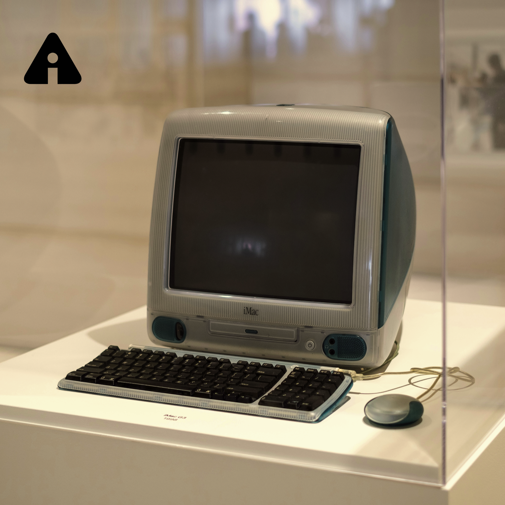

The before
Internet Archive · Archive-It · UX Research · 2025
Evaluating search usability in a complex archival system.
Archive-It is a web archiving platform used by researchers, archivists, and institutions — but its power comes with complexity. Stakeholders and users reported that the existing interface was unintuitive, with overwhelming search results and confusing information pathways that hindered the research process.
Our challenge was to identify where users got stuck, why those breakdowns occurred, and how the interface could better support users' mental models during search.

The before
We began by mapping the existing site architecture to understand the user's journey.
Key insight: The landing page offered too many competing search pathways — multiple bars, carousels, and "explore" tabs — leading to "trial and error" navigation for new users.
We conducted semi-structured, 30–45 minute interviews over Zoom with six key stakeholders. This method allowed us to probe into user motivations while following a standardized protocol for consistency.
Who we interviewed
Findings: Archivists and scholars used different mental models. Scholars relied on specific metadata (e.g., ISSNs, citation totals) that archivists were not consistently providing.
Recommendation: Standardize metadata practices to ensure essential fields like "subject categories" or "keywords" are present across all collections.
Archivist Interview Script
Scholar Interview Script
We deployed surveys to gather quantitative data on user search approaches and feature preferences.
Participants: 2 students, 1 professional researcher, 1 general user.
Finding 1
A majority of users noted they did not know where to start their search or what specific filters did.
Finding 2
Users identified "Collection Title" and "Description" as the most critical factors when deciding to explore a collection.
Finding 3
Quantitative trends showed users preferred using a search bar over manually clicking through organization categories.
We benchmarked Archive-It against direct and indirect competitors (e.g., JSTOR, Library of Congress, UK National Archive).
Best practices found: Competitors used collapsible list views instead of large calendar views and placed advanced/regular search options together for better intuition.
Recommendation: Incorporate a single, unified search bar with "Advanced Search" as a dropdown option rather than a separate section.
Consistency & Standards. Help and Documentation was hidden. Help features were not placed near the search bar where users actually needed them.
Error Recovery. When searches failed, the site provided no feedback on why it failed or how to fix it (e.g., "Did you mean?"), leaving users stuck.
User Control & Freedom. The site lacked a way to "undo" or easily exit a specific search pathway without using the browser's back button.
Recommendation: Consistently place help resources near the search functionality so users can consult them mid-task.
Finally, we conducted moderated usability tests with undergraduate and graduate students between the ages of 18–30. Sessions were conducted over Zoom and in person, and participants were asked to complete a series of search and discovery tasks on the Archive-It platform while thinking aloud.
Usability Test Script
Usability Test Notes
Finding 1
Participants ignored predefined filters almost entirely, relying strictly on the search bar even when it led to poor results.
Finding 2
Small spelling errors completely broke the search experience because the system lacked "fuzzy search" or autocorrect capabilities.
Finding 3
Even experienced archival users "lost track" of the search bar when changing tabs, indicating a need for a more persistent and intuitive header.

More collapsible filters

One singular search bar, navigation landmarks, undo functionalities on filters

Dedicated how-to page

so here is the after :)
Through the triangulation of heuristic evaluation and usability testing, I learned that even expert users (archivists) become novices when a system's search logic is opaque. We found that users weren't failing because of a lack of skill, but because the system provided no feedback on "why" a search failed or how to recover from error.
This project taught me that for specialized tools, my role as a designer is to act as a translator, bridging the gap between a dense back-end database and a user's mental model by providing consistent, visible guidance at the moment of need.
I would then conduct A/B testing between the original interface and the new prototype. My success metrics would be a reduction in "Task Completion Time" and a decrease in "Error Recovery Time."
Simultaneously, I would recommend a Metadata Workshop with the client to create a standardized data-entry template for archivists, ensuring that the new "filters" we proposed actually have high-quality data to display.
Camila Garcia 2026